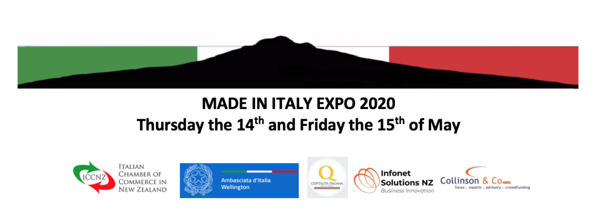

|
Riportiamo questa notizia pubblicata ieri, 25 febbraio 2020, sul sito dell'Ambasciata d"Italia a Wellington:
Si comunica che in data 24 febbraio il Ministero della Salute di Samoa ha stabilito che i viaggiatori provenienti (o in transito) dall'Italia saranno ammessi nel Paese solo se abbiano trascorso 14 giorni di quarantena in un Paese in cui non siano occorsi casi di coronavirus e posseggano certificazione medica (non piu' vecchia di 3 giorni)che escluda il contagio. Tale misure si applicano anche ai viaggiatori provenienti (o in transito) da Cina, Hong Kong, Macao, Giappone, Singapore, Tailandia e Corea del Sud. La certificazione medica (ma non la quarantena di 14 giorni) e' inoltre richiesta per viaggiatori provenienti (o in transito) da: Taiwan, Malesia, Australia, Vietnam, EAU, California (Stati Uniti), Francia, Germania, Canada, Iran. Le Autorita' di Samoa hanno anche deciso che ogni viaggiatore in arrivo nel Paese sara' sottoposto a screening sanitari obbligatori. E' infine fatto divieto alle navi di crociera lo sbarco nel Paese. Source: https://ambwellington.esteri.it/ambasciata_wellington/it/ambasciata/news/dall_ambasciata/2020/02/samoa-restrizioni-all-ingresso.html Siete arrivati di recente in Nuova Zelanda? Avete bisogno di informazioni di natura generale sul Paese e sui servizi consolari? Volete sapere di piu' sulle vostre opzioni di visto?
Non perdete l’opportunita’ di partecipare ai Seminari informativi per i Nuovi Arrivati che l’Ambasciata organizza il prossimo 2 e 3 marzo, rispettivamente a Wellington e Auckland. Nel corso dei Seminari verra’ presentata la Nuova Guida dell’Ambasciata per i Nuovi Arrivati, mentre l’Immigration Advisor Elena Bollino (Apollo Immigration) vi dara’ indicazioni in materia di visti neozelandesi. All’incontro di Wellington partecipera’ anche un rappresentante del NZ Labour Inspectorate che fornira’ indicazioni in materia di diritti per I lavoratori migranti. La partecipazione ai Seminari e’ libera. Per ragioni organizzative vi preghiamo di registrarvi. Click here per il seminario a Wellington Click here Per il seminario a Auckland

(Il post che segue, adattato da un articolo postato sul gruppo LinkedIn Professionisti italiani in Nuova Zelanda, è in lingua inglese, ma il link al modulo di partecipazione https://lnkd.in/g4MzSEP è sia in inglese che in italiano. n.d.r.)
The Italian Chamber of Commerce in New Zealand Inc., in partnership with the Embassy of Italy in Wellington, is pleased to invite companies connected with Italy to exhibit at the ITALIAN EXPO 2020. This event will take place on the 14th and 15th of May 2020 at the spectacular exhibition facility “The Cloud” located in Auckland waterfront. Follow the links below to download the invitation letter and registration form: please complete and return the registration form to info@iccnz.com Invitation letter - https://lnkd.in/gWgAJbn Registration form - https://lnkd.in/g4MzSEP Note that the members of the ICCNZ will have access to a special discount and that the non ICCNZ members will have to pay the full amount, but they will get a free yearly membership which, including the presence on the website and the participation to other activities, will grant the company with a follow up to the Expo. Should you have any questions please do not hesitate to contact info@iccnz.com La quarta edizione della Settimana della Cucina Italiana nel Mondo comincia domani, lunedì 18 novembre, con una serie di eventi in diverse città della Nuova Zelanda organizzati e/o sostenuti dall'Ambasciata d'Italia a Wellington.  Cari Connazionali, Vi inoltriamo l'agenda per la prossima riunione ComItEs Wellington, che si terrà il 24 novembre 2019 ad Auckland, seguita da un breve bollettino di informazioni per gli italiani in Nuova Zelanda. Buona lettura, Sandro Aduso Presidente ComItEs Wellington Inc. Agenda per la prossima riunione del ComItEs Wellington, aperta ai cittadini italiani e neozelandesi di origine italiana, con collegamento Skype con SE l’Ambasciatore Fabrizio Marcelli e con la partecipazione del consulente ComItEs per il Progetto Pensioni-Sicurezza Sociale Data: domenica 24 novembre 2019, dalle ore 9.00 alle 14.00 Luogo: Società Dante Alighieri Auckland, Freemans Bay Community Centre, 52 Hepburn St, Ponsonby, Auckland AGENDA Amministrazione e varie: 9:00 - 9:30 1. Approvazione del verbale della riunione del 7 settembre 2019 2. Approvazione del bilancio consuntivo 2019 3. Approvazione modifica progetto Sicurezza Sociale 4. Fondi Integrativi MAECI 5. Aggiornamento su Elezioni ComItEs 2020 Progetti e attività ComItEs: 9:30 - 12:00 6. Sicurezza Sociale e relazione del consulente ComItEs 7. Archivio Digitale Documenti Immigrazione Italiana 8. Programma Radio Ondazzurra 9. Corrispondenza ufficiale e aggiornamenti relativi ai progetti Working Holiday Visa e Sicurezza Sociale 10. Valorizzazione dell'Italianità in Nuova Zelanda Pausa: 12:00 - 12:30 Varie ed eventuali 12:30 - 13:00 11. Presenza del ComItEs al Festival italiano di Auckland. Notizie di Ciao Italia a Christchurch. BOLLETTINO PER GLI ITALIANI IN NUOVA ZELANDA Onorificenza a Robert “Bon” Gillies, ultimo veterano del 28 battaglione Māori. Il 12 ottobre l'Ambasciatore Fabrizio Marcelli si è recato a Rotorua per consegnare l'onorificenza di Cavaliere al Merito della Repubblica Italiana a Robert “Bon” Gillies, l'ultimo veterano del 28esimo Battaglione Māori (Compagnia C). Mr Gilles ha accettato l'onorificenza anche a nome dell'intero Battaglione in una cerimonia alla Te Papaiouru Marae di Ohinemutu. Missione consolare a Tonga Mercoledì 13 Novembre l’Ambasciata d’Italia a Wellington effettuerà una missione consolare a Nuku'alofa. Nel corso della giornata sarà possibile effettuare l’acquisizione delle impronte per il rinnovo del Passaporto italiano. L’acquisizione delle impronte avverrà presso il Tanoa International Dateline Hotel a partire dalle 9am. Per maggiori informazioni cliccare qui. L'Agenzia Internazionale Stampa Estero (AISE) parla del Festival Italiano ad Auckland L'Agenzia Internazionale Stampa Estero (AISE) ha pubblicato un articolo sul Festival Italiano che si è svolto ad Auckland il 20 ottobre. L'articolo, estratto da un comunicato ComItEs Wellington, commenta: ..."Un trionfo dell'italianità quindi, con una forte attenzione al Made in Italy, senza però dimenticare anche il “Made by Italians”. Infatti non solo i prodotti italiani, ma anche gli italiani all’estero sono un “Made in Italy” da valorizzare, fornitori di servizi e produttori di qualità che nell'ultimo decennio in particolare hanno contribuito fortemente all'aumento delle importazioni di prodotti italiani in Nuova Zelanda." Aise, 25 ottobre 2019 - Cliccare qui per leggere tutto l'articolo.  Il ComItEs Wellington e Radio Ondazzurra hanno presenziato insieme al Festival per fornire informazioni ai connazionali, in particolare sulle attività del ComItEs il primo, e per incontrare dal vivo gli ospiti della radio (e per fissare appuntamenti con futuri ospiti), la seconda. Ringraziamo il pubblico che si è fermato a parlare con noi in giornata e ancora complimenti alla Dante Alighieri di Auckland che ha organizzato il Festival. Giornata del Contemporaneo - Christchurch L’Ambasciata d’Italia a Wellington ha aderito quest’anno alla "Giornata del Contemporaneo - Italian Contemporary Art " appuntamento annuale per la valorizzazione e diffusione dell’arte contemporanea, giunto alla 15esima edizione. La rassegna è promossa da AMACI (Associazione Musei Arte Contemporanea Italiana) e dal MAECI e quest’anno ha visto la partecipazione di 24 musei e più di mille istituiti in Italia e all'estero. L’Ambasciata di Wellington ha partecipato con l’installazione Hybrid Encounters dell’artista Chiara Corbelletto, presentata all’interno della Cunningham House, la serra tropicale dei Giardini Botanici di Christchurch. L’installazione è aperta al pubblico fino al 16 novembre. IV Settimana della Cucina Italiana nel Mondo L'ambasciata Italiana a Wellington presenta la IV edizione della Settimana della Cucina Italiana nel Mondo con una serie di eventi in varie città neozelandesi. Per maggiori informazioni contattare l'ufficio dell'ambasciata Promozione Culturale ed Eventi - Email: wellington.promozione@esteri.it Terza edizione di Ciao Italia a Christchurch L'Italian Chamber of Commerce in New Zealand sta organizzando la terza edizione di Ciao Italia a Christchurch. L'evento si terrà sabato 23 Novembre dalle 10.00 alle 16.00 presso lo storico Arts Center in Worcester St, interamente restaurato dopo il terremoto. L'evento sarà in concomitanza con la settimana della Cucina Italiana nel mondo. Per maggiori informazioni visitare il sito della ICCNZ. Cinema Italiano Festival, tutti i prossimi appuntamenti Continua il tour di Cinema Italiano in Nuova Zelanda, i prossimi appuntamenti saranno: Wellington 6 - 18 November New Plymouth 8 - 14 Nov Waiheke 9 -15 January 2020 Mercatino di Natale ad Auckland
Sabato 14 dicembre si terrà presso il Freemans Bay Community Centre l'annuale Mercatino di Natale della Società Dante Alighieri di Auckland. Entrata libera. Per maggiori informazioni cliccare qui. Continua a crescere il gruppo LinkedIn Professionisti Italiani in Nuova Zelanda Per chi vive in Nuova Zelanda e desidera conoscere connazionali e business italiani su LinkedIn il ComItEs Wellington informa che è stato creato il gruppo Professionisti Italiani in Nuova Zelanda. Mercoledì 13 Novembre l’Ambasciata d’Italia a Wellington effettuerà una missione consolare a Nuku'alofa.
Nel corso della giornata sarà possibile effettuare l’acquisizione delle impronte per il rinnovo del Passaporto italiano. L’acquisizione delle impronte avverrà presso il Tanoa International Dateline Hotel a partire dalle 9am. Per maggiori informazioni cliccare qui. L"Ambasciata di Wellington ci segnala che nell'ambito delle iniziative di promozione del turismo delle radici il Ministero degli Esteri ha curato la pubblicazione della prima edizione di una "Guida alle radici italiane", dedicata a quattro Regioni italiane particolarmente interessate dal fenomeno migratorio: Abruzzo, Basilicata, Emilia Romagna e Puglia (mentre si prevede che altre Regioni potranno essere oggetto di future edizioni).
Oltre a rappresentare uno strumento per consolidare i vincoli identitari delle comunità italiane all'estero e per rinsaldarne i legami con i territori di origine, tale segmento turistico costituisce altresì un fattore di sicura rilevanza nella più generale strategia di promozione del sistema Italia nel mondo. La Guida può essere acquisita in formato PDF (per una possibile fruizione su dispositivi mobili), collegandosi al sito www.raizitaliana.it e al sito www.esteri.it. Riportiamo questo messaggio dell'Ambasciata d'Italia a Wellington:
Si informano i connazionali residenti ad Auckland che il Console Onorario Lindsey Jones sarà assente dal 9 luglio al 9 ottobre 2019. Durante tale periodo vi preghiamo di contattare per assistenza di natura consolare direttamente l’Ambasciata d’Italia a Wellington all’indirizzo email wellington.cons@esteri.it. Per coloro che durante il suddetto periodo avessero urgente bisogno di presentare richiesta di nuovo Passaporto italiano, sarà possibile prenotare un appuntamento per l’acquisizione dei dati biometrici ad Auckland nelle seguenti giornate: 19 luglio, 16 agosto, 16 settembre. L’acquisizione sara’ effettuata dalla Prof. Bernadette Luciano - corrispondente consolare protempore – presso la University of Auckland, Arts 2 Building (School of Cultures Languages and Linguistics), 18 Symonds Street, Level 3, Office 318 (Parcheggio piu’ vicino: University of Auckland, Owen Glenn Building, 12 Grafton Road, Auckland). Tutti coloro che volessero approfittare di tale servizio sono pregati di prenotare un appuntamento tramite il sistema di prenotazioni online della nostra Ambasciata: https://prenotaonline.esteri.it/Login.aspx?cidsede=100110&ReturnUrl=/ In alternativa sarà sempre possibile prenotare un appuntamento per il rilascio di un nuovo Passaporto presso l’Ambasciata d’Italia a Wellington  L'Ambasciata d'Italia a Wellington assume un contrattista locale nel settore commerciale.
Il bando del concorso, i criteri di ammissione e il modulo di richiesta sul sito. Le domande di ammissione dovranno essere presentate entro e non oltre le ore 24.00 del giorno 8 luglio 2019. Cliccare qui per leggere il bando e scaricare i moduli di richiesta di ammissione. Bernadette Luciano ha terminato il suo mandato come Console Onorario ad Auckland. Bernadette, che è stata la Console ad Auckland dal 2015, è Associate Dean International per la Faculty of Arts dell’Università di Auckland e Head of the School of Cultures, Languages and Linguistic presso la stessa Università.
Il ComItEs Wellington ringrazia Bernadette per tutto il lavoro svolto a sostegno della comunità italiana di Auckland e delle città vicine negli ultimi 4 anni. Grazie! 💐 Cogliamo l'occasione per dare il benvenuto alla nuova Console, Lindsey Jones Office/Ufficio: 28 Marine Parade, Herne Bay, Auckland, 1011 Tel.+64 (0)27 4715 057 L'indirizzo email del Consolato di Auckland rimarrà invariato ed è: auckland.onorario@esteri.it |
Fai clic qui per modificare.
Archivi
Giugno 2022
Categorie
Tutto
|
 Feed RSS
Feed RSS
Copyright © 2022